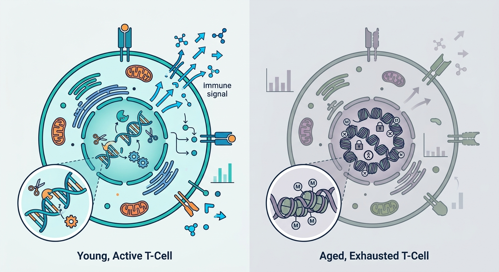

The Epigenetic Lockout: How Aging Disarms Our Best Immune Defenders

Imagine an elite security force whose training manuals are gradually locked away, while new, counterproductive orders are written in bold ink across every manual. This is precisely what happens to our immune system as we age. CD8 T cells—the killer T cells responsible for hunting down virus-infected cells and emerging tumor cells—lose their punch over time, slipping into states of senescence and exhaustion. For decades, immunologists knew that aging T cells simply stopped working efficiently, but the precise molecular rewiring behind this collapse remained an elusive puzzle in the field of longevity medicine.
Now, a landmark study published in Science Immunology reveals that this cellular decline is driven by a profound reshuffling of the T cell's chromatin architecture—the structural packaging of DNA that dictates which genes are accessible and which are locked away. Using high-resolution chromatin accessibility mapping across young and aged mice, researchers uncovered that age-related CD8 T cell dysfunction boils down to a failure at three distinct genomic control levels. First, aging T cells lose accessibility to crucial "stemness" genes, effectively stripping them of their ability to self-renew. Second, exhausted memory T cells lose access to "restraint" genes that normally prevent over-activation, causing them to burn out rapidly. Finally, both senescent and exhausted T cell subsets suffer from an open-door policy at "terminal inhibitory" gene loci, locking them into an irreversible state of dysfunction.
Yet the most unexpected discovery was a plot twist in the cellular hierarchy. The researchers identified an entirely novel population of CD8 T cells that emerges uniquely with age. Rather than merely being worn-out soldiers, a subset of aged virtual memory T cells (TVM cells) actively metamorphose into regulatory suppressor cells. Marked by high expression of Fcgr2b—the gene encoding the inhibitory receptor FcγRIIb/CD32b—these rogue CD8 T cells take on immunomodulatory, brake-like characteristics. Instead of helping clear pathogens, this newly identified population actively dampens immune activation, serving as a distinct hallmark of the aging immune landscape.
This discovery opens intriguing possibilities for longevity biotech. If immunosenescence is largely driven by specific chromatin shifts and the emergence of specialized suppressor T cells, then therapeutic strategies do not need to rewrite the entire genome; they simply need to reset the epigenetic dials. Targeted therapies that block FcγRIIb or selectively eliminate these novel CD8 regulatory cells could potentially reinvigorate the aging immune repertoire, boosting the efficacy of vaccines and cancer immunotherapies in older adults.
However, translation to human therapeutics requires a dose of cautious realism. While mouse models offer unprecedented clarity into T cell subsets, mouse and human immune systems diverge significantly in their Fc receptor biology and T cell differentiation pathways. Furthermore, systematically dismantling immune brakes like FcγRIIb comes with a serious risk: tipping the balance from immunosenescence into hyper-inflammation or systemic autoimmunity. Long-term studies must confirm whether clearing these age-associated CD8 regulatory cells actually restores youthful pathogen defense without triggering collateral autoimmune damage in human tissue.
Insights from Longevity KG: This study illuminates how epigenetic drift directly drives cellular exhaustion and systemic immune decline. The progressive loss of stemness accessibility alongside the acquisition of senescent signatures highlights the convergence of epigenetic instability and immunosenescence. Aligning these findings with cellular rejuvenation therapies and senolytic strategies suggests that reversing age-related T cell chromatin signatures—or selectively clearing the newly identified FcγRIIb+ CD8 suppressor population—could serve as a critical axis for restoring youthful immune resilience and metabolic homeostasis.
Sources & Citations:
Primary Source: Aging drives distinct chromatin signatures of CD8 T cell dysfunction and the emergence of a unique CD8 T (Science immunology)
- Davenport, B. et al. (2024). Aging drives distinct chromatin signatures of CD8 T cell dysfunction and the emergence of a unique CD8 T. Science Immunology. https://doi.org/10.1126/sciimmunol.aej5412